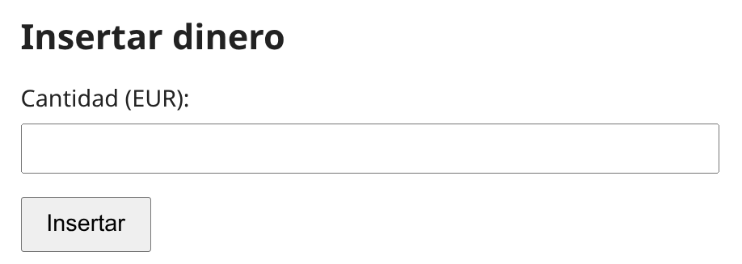
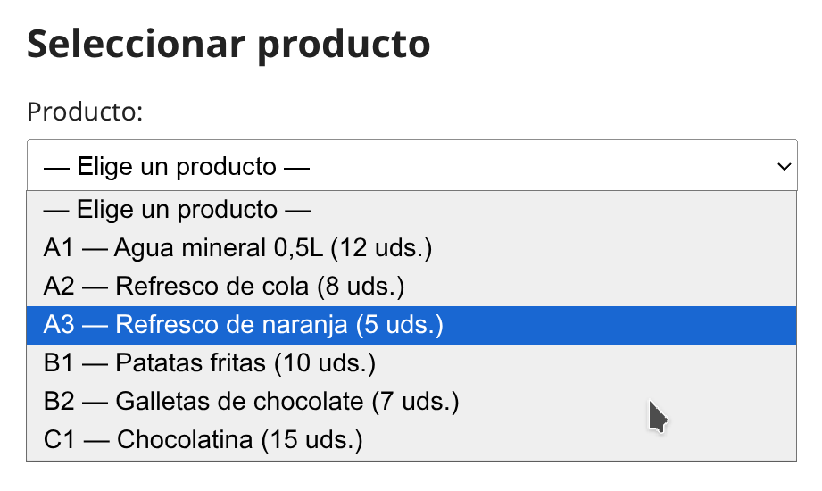
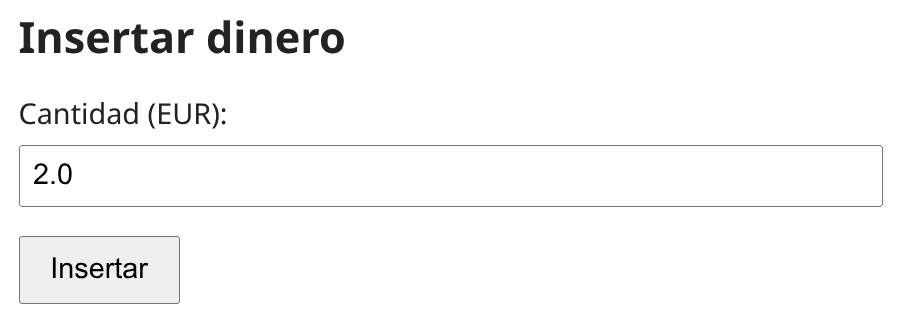
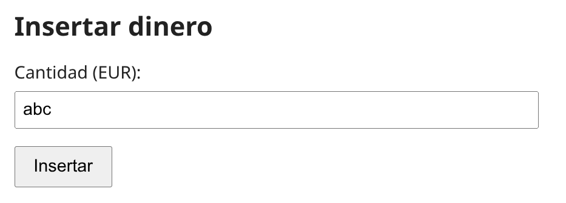
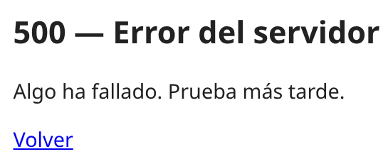
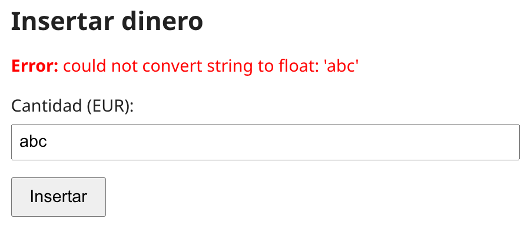
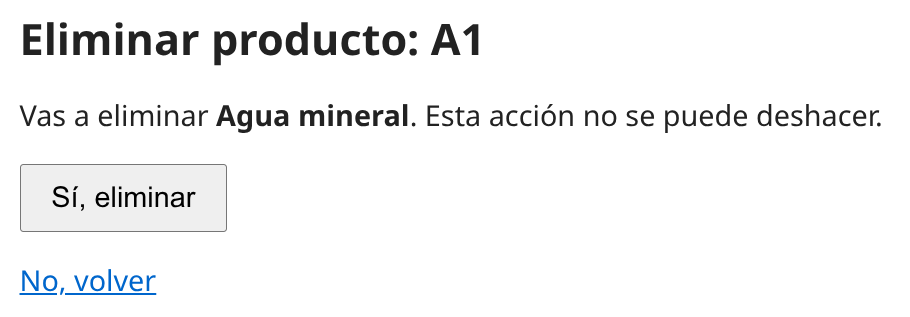
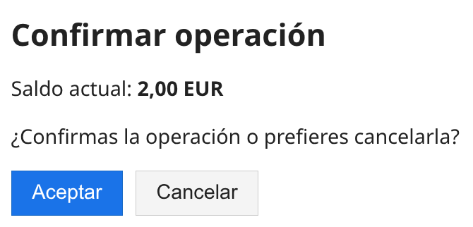

FORMULARIOS HTML Y MÉTODO POST EN FLASK¶
Estos apuntes asumen que ya conoces lo visto en los apuntes anteriores: rutas, excepciones, manejadores de error y plantillas Jinja2.
Ejemplo recurrente. Para ilustrar los conceptos a lo largo de la fase usaremos un caso de estudio: un formulario para que el usuario introduzca una cantidad numérica (por ejemplo, un importe en EUR) y la envíe a una ruta
/insertarque la procese. Veremos cómo construir el HTML, cómo recoger los datos en el servidor, cómo validarlos y cómo manejar errores. Es el mismo ejemplo que verás implementado paso a paso en el lab.
HTTP: GET y POST¶
El problema con GET para escribir datos¶
Hasta ahora todas las rutas que hemos hecho eran GET. El navegador pide una URL y Flask responde. En los apuntes anteriores incluso hicimos rutas que pasaban datos en la propia URL, por ejemplo /recurso/<id> o /operacion/<param1>/<param2>/<param3>.
Eso funciona, pero tiene problemas serios cuando lo que hacemos modifica el estado del servidor:
- La URL es visible en la barra del navegador, en el historial y en cualquier registro intermedio (proxy, log).
- La URL es reproducible: si recargas con F5, vuelve a ejecutar la acción. Por ejemplo: si la URL inserta un importe, recargar la página suma el importe otra vez.
- La URL tiene límite de tamaño (típicamente unos 2 KB) y restricciones de caracteres.
- Cualquier enlace o buscador puede disparar la acción sin intención del usuario.
POST resuelve todo esto: los datos viajan en el cuerpo de la petición, no en la URL.
Comparativa GET vs POST¶
| Aspecto | GET | POST |
|---|---|---|
| Dónde van los datos | En la URL (?clave=valor) o en la propia ruta (/insertar/2.0) |
En el cuerpo de la petición HTTP |
| Visible en barra de direcciones | Sí | No |
| Se cachea | Sí (navegador, proxy) | No por defecto |
| Recargar con F5 | Repite el GET sin avisar | El navegador pregunta antes de reenviar |
| Idempotente | Sí (debería serlo) | No |
| Para qué sirve | Leer (mostrar, consultar) | Escribir (crear, modificar, borrar) |
Conceptos: idempotente
Una operación HTTP es idempotente cuando ejecutarla 1 vez o N veces deja el servidor en el mismo estado. Por ejemplo, un GET /saldo repetido 10 veces sigue devolviendo el mismo valor; en cambio, un POST /insertar con cantidad=2 ejecutado 10 veces sumaría 10 veces ese importe. Por eso pulsar F5 sobre un GET es seguro y sobre un POST el navegador pregunta antes de reenviar.
Conceptos: regla práctica
- Si la URL solo lee algo y volver a llamarla no cambia nada →
GET. - Si la URL escribe en la base de datos: por ejemplo, da de alta un recurso, modifica un campo, borra un elemento… →
POST.
Por ejemplo, en nuestro proyecto las rutas que muestran datos (listados, fichas, búsquedas) se quedan en GET. Las que tocan estado (
/insertar,/agregar,/eliminar/...,/comprar,/cancelar) van a POST.
El formulario HTML¶
Estructura mínima¶
Un formulario es un bloque <form> con campos <input> y un botón de envío. Cuando el usuario pulsa el botón, el navegador empaqueta los valores y los envía al servidor con el método y la URL que indique el formulario.
| Atributo | Qué hace |
|---|---|
method="post" |
Verbo HTTP que usa el navegador al enviar. Por defecto sería get. |
action="..." |
URL a la que se envían los datos. Usa url_for(...) en lugar de escribirla a mano. |
name="cantidad" |
Clave con la que el campo llegará al servidor. Sin name, el campo no se envía. |
required |
Validación del cliente: el navegador no deja enviar si el campo está vacío (el servidor también tendrá que comprobarlo). |
Más adelante añadiremos un atributo
value="..."a este<input>para conservar lo que el usuario tecleó cuando re-renderizamos el formulario tras un error. Por ahora, con esta versión basta.
El atributo name es obligatorio
El name= es la etiqueta con la que se envía el valor del campo: sin name, el campo no se envía y el dato se pierde. Más adelante veremos cómo se recoge en el servidor.
Validación en el cliente y en el servidor¶
La validación de un formulario puede ocurrir en dos sitios:
- En el cliente (el navegador): rechaza el envío antes de que salga del equipo del usuario. Es rápida y mejora la experiencia, pero se puede saltar — basta con desactivar JavaScript, modificar el HTML desde las herramientas del navegador o enviar la petición desde un terminal con
curl. - En el servidor (nuestro código Flask y el dominio): se ejecuta sí o sí cuando llega la petición. Es la que realmente protege los datos.
La regla
La validación del cliente es ayuda; la del servidor es defensa. Lo que pongamos en el HTML no nos exime de comprobarlo en Python. Más abajo, en Validación: misma excepción, distinto re-render, lo vemos en detalle.
Tipos de input habituales¶
| Tipo | Para qué | Ejemplo |
|---|---|---|
text |
Texto libre (también números si validamos en aplicación) | <input type="text" name="codigo"> |
number |
Números (validación del navegador) | <input type="number" name="cantidad"> |
password |
Texto oculto | <input type="password" name="clave"> |
checkbox |
Casilla on/off | <input type="checkbox" name="oferta"> |
select |
Desplegable con <option> dentro |
<select name="codigo">...</select> |
submit |
Botón que envía el formulario | <button type="submit">Enviar</button> |
Por qué usamos text en vez de number para valores numéricos como precios y cantidades
Siguiendo la regla anterior, la validación de verdad la hace el servidor — la del cliente es solo ayuda. Y en el caso concreto de type="number" esa ayuda no es fiable: varía entre navegadores y depende del idioma del sistema (algunos aceptan coma, otros solo punto). Nos sale más limpio dejar que el campo llegue siempre como string y validar una sola vez en el servidor.
El route que muestra un formulario (GET)¶
En los apuntes de plantillas usamos render_template para servir plantillas que mostraban datos al usuario: la lista de productos, la ficha de un producto, los resultados de una búsqueda.
Una plantilla, sin embargo, no tiene por qué contener solo datos: puede contener también el HTML de un formulario que el usuario va a rellenar. Eso es lo que vamos a hacer ahora.
La plantilla insertar.html¶
Guardamos el HTML del formulario que vimos arriba en un fichero insertar.html, en la carpeta templates/, igual que cualquier plantilla de Fase 4:
Es una plantilla Jinja2 normal — hereda de
base.htmly usaurl_for(...)para construir la URL delaction. La novedad es que dentro delblock contenidohay un<form>en vez de una tabla o una ficha.

El route que la sirve¶
El route que entrega esta plantilla cuando el usuario escribe http://localhost:5000/insertar en la barra del navegador es un GET normal:
Eso es todo lo que hace falta para que el usuario vea el formulario en pantalla. Cuando lo rellene y pulse Insertar, el navegador hará una petición POST a la misma URL /insertar con los datos en el cuerpo.
Este route todavía no acepta POST
Si arrancas la app con solo esta versión del route y pulsas Insertar, Flask responde 405 Method Not Allowed: el decorator @app.route('/insertar') admite solo GET por defecto. En la siguiente sección añadimos la rama POST para que el envío funcione.
Conceptos: la plantilla del formulario es 'tonta'
La plantilla insertar.html no sabe nada de qué pasa después. Solo describe el formulario que se muestra. Cómo procesamos lo que se envía lo vemos en la siguiente sección.
Plantillas con listas desplegables pobladas por el route¶
A veces los valores válidos de un campo <select> no son fijos sino que vienen de la base de datos (por ejemplo, los productos disponibles, los usuarios registrados, las categorías activas). En esos casos el route pasa la lista a la plantilla con un kwarg, igual que pasaríamos cualquier otro dato:
Y la plantilla rellena el <select> con un bucle {% for %}:

Es el mismo bucle
{% for %}de Jinja2 que ya vimos en los apuntes de plantillas para listar elementos en una tabla. La diferencia es que ahora cada elemento es una<option>en vez de una fila de tabla.
Acceder a los datos del formulario en Flask¶
El objeto request.form¶
En la siguiente sub-sección añadiremos la rama POST al route /insertar. Antes, veamos cómo Flask deja accesibles los campos del formulario cuando llega un POST.
Flask construye un diccionario con todos los campos del formulario y lo deja accesible en el atributo request.form del objeto request que ya conocemos de los apuntes anteriores (allí lo usamos con before_request para registrar en el log request.method y request.path; ahora vamos a usar request.form).
Dentro del route, hay dos maneras de leer un campo concreto del formulario:
Las dos formas son válidas; lo que cambia es qué ocurre cuando la clave no está presente:
| Acceso | Comportamiento | Cuándo usarlo |
|---|---|---|
request.form['clave'] |
Lanza KeyError si la clave no existe. |
Campos obligatorios: si no llegan, es un bug de la plantilla, no del usuario. |
request.form.get('clave', valor_por_defecto) |
Devuelve el valor por defecto si no existe. | Campos opcionales (un descuento que puede no venir) y para reconstruir el formulario tras un error sin asumir que todos los campos estaban rellenos. |
Routes de formularios con dos verbos (tipos de peticiones)¶
Hasta ahora cada route aceptaba solo GET (era el valor por defecto de @app.route). Para gestionar formularios el mismo route tiene que mostrar el formulario (GET) y procesarlo (POST):
Fíjate en
methods=['GET', 'POST']: lista los verbos permitidos. Si alguien intenta acceder con un verbo no listado (por ejemplo, unDELETE), Flask responde405 Method Not Allowedautomáticamente.
El patrón if request.method == 'POST'
Es el patrón estándar para routes con dos verbos. La rama del if procesa el POST; el return que está fuera del if (no necesita else) es el GET. Sale natural porque el flujo de POST suele acabar con un return antes de llegar a la rama del GET.
El patrón Post/Redirect/Get (PRG)¶
El problema sin PRG¶
Imagina la siguiente situación. El usuario escribe http://localhost:5000/insertar en la barra del navegador. Eso es un GET a /insertar: nuestro route entra por la rama del GET (el return render_template('insertar.html', ...) que está fuera del if) y devuelve esta página con el formulario:

Ahora el usuario teclea 2.0 en el campo "Cantidad" y pulsa Insertar. Esta vez el navegador hace un POST a /insertar con la cantidad en el cuerpo de la petición. La misma URL, pero por dentro del route entramos por la otra rama: la del if request.method == 'POST'. Procesamos la cantidad (insertar 2 EUR en el saldo) y, de la forma más directa, devolvemos la página saldo.html ya con el nuevo saldo. A primera vista parece razonable: el usuario hace una acción y ve el resultado.
El usuario ve /insertar con el saldo actualizado. Pero la URL sigue siendo /insertar y el navegador recuerda que la última petición fue un POST con cantidad=2.0. Si pulsa F5, el navegador pregunta "¿Reenviar formulario?" y, si dice que sí, vuelve a insertar 2 EUR. Lo mismo si añade la página a marcadores.
La solución: redirigir tras éxito¶
Tras procesar el POST, devuelve una redirección a otra ruta:
Lo que pasa entonces:
- El navegador recibe
302 FoundconLocation: /saldo. - Hace un GET a
/saldo. - Esa GET es la que aparece en la barra de direcciones.
- Si el usuario pulsa F5, recarga
/saldo(un GET inocuo), no el POST original.
Ya usamos
redirect(url_for(...))en los apuntes anteriores. La diferencia es que ahora redirigir no es un detalle estético, sino la pieza que protege contra reenvíos accidentales.
Conceptos: PRG en una línea
Tras un POST con éxito, no devuelvas HTML: devuelve una redirección. El cliente termina viendo una URL idempotente que puede recargar, marcar o compartir sin efectos secundarios.
| Situación | Qué devolver |
|---|---|
| GET (mostrar formulario) | render_template('form.html', ...) |
| POST con éxito | redirect(url_for('destino')) |
| POST con error | render_template('form.html', error=..., <datos del formulario>), código 400/404/409 |
Hay un caso excepcional: si el POST con éxito produce información puntual sin URL natural a la que redirigir (por ejemplo, un mensaje de confirmación con un dato calculado al vuelo), podemos renderizar una plantilla de mensaje en lugar de redirigir. En la fase 6 unificaremos este caso con un sistema de mensajes flash que sí es compatible con PRG.
Mala práctica: POST que devuelve HTML directamente
# Mal: tras éxito, recargar duplica la operación.
@app.route('/insertar', methods=['GET', 'POST'])
def insertar():
if request.method == 'POST':
servicio.insertar_dinero(float(request.form['cantidad']))
return render_template('insertar.html', mensaje='Saldo añadido')
return render_template('insertar.html')
Validación: misma excepción, distinto re-render¶
Hasta aquí el route funciona cuando el usuario teclea una cantidad válida: lee el campo, llama al servicio, redirige. Pero, ¿qué pasa si en un campo numérico teclea abc, deja un valor en -1 o intenta crear un recurso con una clave que ya existía?

{ width="300" }En esos casos el servicio o el propio Python lanzarán una excepción, y si no la atrapamos, Flask responde con un 500 Internal Server Error: una pantalla genérica de error que no le dice nada al usuario y, además, le hace perder los datos que ya había tecleado.

{ width="300" }Lo que queremos es lo contrario: detectar el error, volver a mostrar el mismo formulario con un mensaje explicativo y conservar lo que el usuario ya había escrito para que solo tenga que corregir el campo con error.
Un único mensaje, no marcas de error por cada campo
En esta fase mostraremos un único mensaje con la excepción capturada (un <p> rojo encima del formulario), no mensajes individuales bajo cada campo. Si el usuario teclea varios datos inválidos a la vez, el route los procesa secuencialmente y la primera excepción que se dispare es la que mostramos; el usuario la corrige, vuelve a enviar, y si queda otro error aparece el siguiente.

{ width="400" }En esta sección vemos cómo hacerlo. Tres pasos:
- Identificar qué errores pueden ocurrir y qué excepción los representa (sub-sección Validación de tipo y validación de regla de negocio).
- Atraparlos con
try/exceptdentro del route (sub-sección Patrón completo: insertar dinero). - Re-renderizar la plantilla pasándole el
str(e)de la excepción como kwargerror=...y los datos previos para conservar lo tecleado, en lugar de redirigir.
El dominio sigue siendo el mismo¶
La novedad ahora no es dónde se valida (eso sigue en el dominio, igual que cuando construimos la interfaz de consola en apuntes anteriores). La novedad es que ahora, cuando atrapamos la excepción, en lugar de devolver un texto crudo return str(e), 400 volvemos a renderizar el formulario con los datos que el usuario tecleó y un mensaje de error. Es el mismo try/except que ya hicimos; cambia solo lo que ponemos en el except.
Validación de tipo y validación de negocio¶
Cuando llegan campos como string, hay dos clases de validación que pueden fallar:
| Tipo | Origen | Ejemplo de situación | Excepción típica |
|---|---|---|---|
| De tipo / formato | float(...), int(...) |
El usuario teclea abc en un campo numérico, o 1,5 con coma decimal |
ValueError |
| De negocio | El servicio o el dominio | Por ejemplo, un importe que debe ser positivo y llega -1 |
ValueError |
| De estado: recurso ya existe | El repositorio | Por ejemplo, alta con una clave duplicada | Excepción del dominio (ConflictoExistente o similar) |
| De estado: recurso no existe | El repositorio | Por ejemplo, intentar borrar lo que ya no está | Excepción del dominio (RecursoNoEncontrado o similar) |
Las dos primeras lanzan el mismo tipo de excepción (
ValueError) porque Python usaValueErrorpara cualquier "valor inválido", sea de tipo o de regla. Al usuario le da igual si el problema es que escribióabco si escribió-1— en ambos casos se queda en el formulario con un mensaje. Por eso un únicoexcept ValueErrorcubre las dos.
Actualizar la plantilla para mostrar el error y conservar el valor¶
Antes de tocar el route, la plantilla insertar.html tiene que estar preparada para recibir dos cosas nuevas:
- Un mensaje de error que dibujaremos encima del formulario (cuando exista).
- El valor previo del campo
cantidad, para que aparezca relleno con lo que el usuario tecleó.
Modificamos la plantilla de ejemplo insertar.html con un bloque {% if error %} y un atributo value="{{ cantidad or '' }}" en el <input>:
Dos detalles de Jinja2:
{% if error %}...{% endif %}: el<p>rojo solo se renderiza si la variableerrortiene contenido. Cuando el route pasaerror=None(caso GET o éxito), no se dibuja nada.value="{{ cantidad or '' }}": sicantidadviene con valor, lo usamos. Sicantidadviene aNone, Python evalúa elory devuelve la parte derecha (la cadena vacía). El HTML resultante es entoncesvalue=""y el campo aparece limpio.
Patrón completo: insertar dinero¶
Con la plantilla ya preparada, este es el route definitivo de /insertar incluyendo el patrón PRG y la validación:
Tres detalles importantes:
- En éxito redirigimos (
redirect), no renderizamos. - En error volvemos a renderizar la misma plantilla con
error=...ycantidad=.... - Pasamos
request.form.get('cantidad', '')para que el campo aparezca relleno con lo que el usuario escribió.
Conceptos: el , 400 final del return
Cuando una vista de Flask devuelve algo, 400, Python lo interpreta como una tupla de dos elementos: (cuerpo, código_de_estado). Flask la desempaqueta y construye una respuesta con ese cuerpo y ese código HTTP. Por eso , 400 aparece colgando fuera del paréntesis de cierre del render_template: no forma parte de la llamada al render_template, está al mismo nivel. Es equivalente — y a veces se ve escrito así — a return (render_template(...), 400) con paréntesis explícitos rodeando la tupla.
Mala práctica: vaciar el formulario tras un error
Si el usuario tecleó un precio como 1,5 (con coma) y le dices "formato incorrecto", lo más frustrante es que al volver al formulario tenga que escribirlo todo otra vez. El mensaje de error tiene que llegar acompañado de los datos tecleados, no en lugar de ellos.
Varios except apilados: un route, varios códigos HTTP¶
El route de /insertar solo necesita capturar ValueError porque la única operación que puede fallar es la conversión del importe y la validación del dominio. Pero cuando un route trabaja con más operaciones, normalmente puede fallar de varias formas, cada una con su propio código HTTP.
El caso típico es el route de alta de un producto. Aquí pueden ocurrir dos cosas distintas:
| Fallo | Excepción | Código HTTP |
|---|---|---|
El precio es abc, o la cantidad es -1 |
ValueError |
400 |
| El código del producto ya existe | ProductoYaExisteError |
409 |
El patrón es un único try con varios except debajo, cada uno con su render_template y su código HTTP:
Tres detalles:
- Mismo patrón de re-render en los dos
except: cambia solo el código HTTP. datos=request.formse pasa entero a la plantilla en lugar de campo a campo, porque ahora hay varios campos (codigo,nombre,precio...) que conservar.- La plantilla
agregar.htmllee cada campo con la misma idea que antes:value="{{ datos.codigo or '' }}",value="{{ datos.nombre or '' }}", etc.
Conceptos: ¿por qué códigos HTTP distintos?
Los códigos HTTP no son solo para humanos: los consume cualquier cliente automatizado (otro programa, una API, un script). Un 400 significa "los datos que enviaste están mal formados"; un 409 significa "los datos son válidos, pero entran en conflicto con el estado actual del servidor". Para el usuario que rellena el formulario el resultado es el mismo (vuelve a ver el formulario con un mensaje), pero el código es información útil para el cliente que reciba la respuesta.
El orden de los except no importa aquí
ValueError y ProductoYaExisteError no tienen relación de herencia entre sí, así que da igual cuál pongamos primero. Solo importaría el orden si capturáramos una excepción y sus subclases — en ese caso, la subclase debe ir antes (es la misma regla que en cualquier try/except de Python).
Operaciones destructivas y POST¶
Por qué borrar nunca puede ir en GET¶
Un enlace del tipo <a href="/eliminar/<id>">Eliminar</a> parece inofensivo, pero se puede activar sin intención del usuario:
- Al hacer clic accidental en el enlace.
- Al recargar la página tras una eliminación previa.
- Al previsualizar el enlace en un chat o un mensaje (Slack, Telegram y muchos otros hacen un GET silencioso para mostrar la vista previa).
- Al ser indexado por un buscador que rastree tu intranet.
- Al ser visitado por precarga del navegador.
Todos esos casos lanzan un GET automático. Si el GET borra, el daño está hecho.
El patrón de confirmación¶
La solución estándar tiene dos pasos sobre la misma URL:
- GET
/eliminar/<id>→ muestra una página de confirmación que dice qué se va a borrar. - POST
/eliminar/<id>→ ejecuta el borrado y redirige.
Una ruta de eliminar de ejemplo quedaría:
La plantilla de confirmación contiene un formulario POST (no un enlace) con un botón "Sí, eliminar" y un enlace "No, volver" que sí es seguro porque solo navega:
<form method="post" action="{{ url_for('eliminar', codigo=recurso.codigo) }}">
<button type="submit">Sí, eliminar</button>
</form>
<p><a href="{{ url_for('ver_recurso', codigo=recurso.codigo) }}">No, volver</a></p>

{ width="300" }El
<a>de "No, volver" es seguro porque solo navega a una página de lectura: no modifica nada. La regla, en una frase: los enlaces pueden navegar, no actuar.
Mala práctica: enlaces que borran
Sustitúyelo siempre por un formulario POST con un botón. El método HTTP es la diferencia entre un enlace navegable y una acción destructiva.Routes que solo aceptan POST¶
Algunas acciones que modifican estado no necesitan pantalla de confirmación previa: o bien el botón que las dispara ya está integrado en otra pantalla junto a la acción contraria, o el contexto en el que aparece el botón ya hace de confirmación suficiente. En esos casos el route solo debe aceptar POST, sin verbo GET.
Por ejemplo, una acción de cancelar cuyo botón vive en la misma pantalla que el de confirmar la operación:
Una pantalla que ofrezca al usuario dos opciones (aceptar y cancelar) tendría dos botones, cada uno en su propio <form> POST apuntando a la URL correspondiente. Por ejemplo:

{ width="300" }Si alguien escribe http://localhost:5000/cancelar en la barra del navegador, Flask responde 405 Method Not Allowed. Es justo lo que queremos: la única forma de disparar la acción es pulsando el botón del formulario que apunta a esa URL con POST.
Resumen del patrón completo¶
| Pieza | Dónde vive | Qué hace |
|---|---|---|
<form method="post" action="..."> |
Plantilla | Empaqueta los campos y los envía al servidor con POST. |
name="..." en cada <input> |
Plantilla | Define la clave con la que llega el campo a request.form. |
{% if error %} con <p> rojo |
Plantilla | Muestra el mensaje de error cuando el route re-renderiza tras una excepción. |
value="{{ campo or '' }}" |
Plantilla | Conserva lo que el usuario tecleó cuando el formulario se re-renderiza. |
Validación cliente (required, type=...) |
Plantilla | Ayuda al usuario, pero se puede saltar. |
methods=['GET', 'POST'] |
Route | Permite los dos verbos sobre la misma URL (formulario en GET, procesar en POST). |
methods=['POST'] |
Route | Solo procesar; sin pantalla previa. Acceder con GET responde 405. |
if request.method == 'POST': |
Route | Bifurca entre mostrar el formulario y procesarlo. |
request.form['x'] o .get('x', '') |
Route | Lee los campos enviados. |
try/except con excepciones del servicio/dominio |
Route | Defensa: validación que sí se ejecuta sí o sí. |
return redirect(url_for(...)) |
Route | Implementa Post/Redirect/Get tras éxito (POST → 302 → GET). |
return render_template(..., error=...), código |
Route | Re-renderiza el formulario con mensaje cuando hay excepción. |
| Códigos HTTP: 400 / 409 / 404 | Route | Identifican el tipo de error al cliente (datos inválidos / conflicto / no existe). |
| Patrón Post/Redirect/Get (PRG) | Route | Tras un POST con éxito, devolver redirect(...) en lugar de HTML: F5 recarga el GET de destino de la redirección, no repite la operación. |
| Operación destructiva con confirmación | Route + Plantilla | GET muestra "¿seguro?", POST ejecuta. Nunca destruir vía enlace. |
En la fase 6 mejoraremos dos cosas: los mensajes flash (un sistema estándar para mostrar avisos "compra realizada" tras un redirect) y los mensajes de error de Python que ahora muestras tal cual (
could not convert string to float...). Por ahora, lo que tienes es suficiente para una app web honesta: PRG, validación con re-render y protección frente a operaciones destructivas detrás de POST.